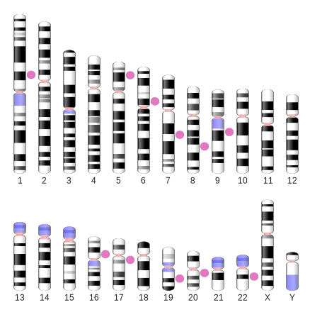
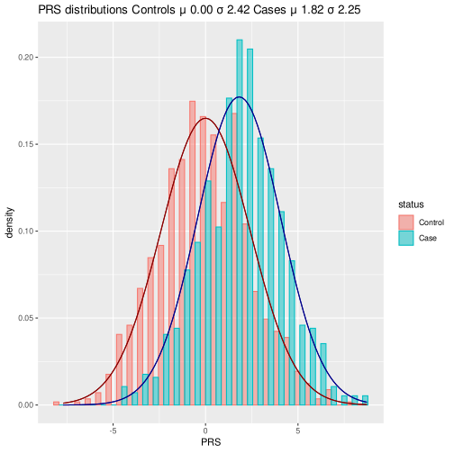
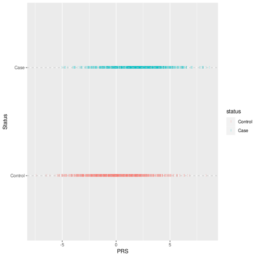
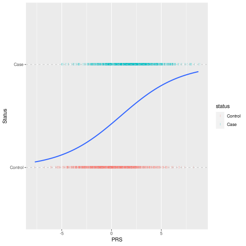
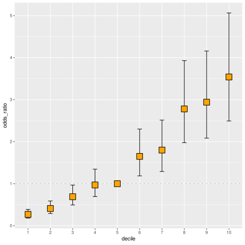

Polygenic Risk Score Calculation
Table of Contents
You can find the interactive app here.
1. Intro
These 4 nucleotides in sequence make up our DNA.
Our observable traits like height, hair, and eye color as well as diseases manifest according to our biological heritage. For all humans, this heritage comes in the form of ~3.25 billion bases long DNA sequence from both parents chunked and packaged as chromosomes. What makes this heritage unique is the collection of differences in these bases. Every person carries a different set of these variations made unique by the shuffling of DNA segments in germ cells. These variations can be large or small; it could be the addition or deletion of bases or the change of bases from one to another. For some locations in the genome, multiple versions of these changes will be present in the population.
Some of these variations have a high enough impact to project their effect on phenotype by themself. Some of the variations affect the phenotype in concert with each other showing their effect in an additive way. We model this additive effect of multiple variations on a given phenotype with a Polygenic Risk Score (PRS). This writing aims to give a basic understanding of PRS and some concepts related to it in literature.
1.1. Polygenic
Polygenic means multiple genes are involved in the emergence of the given phenotype. Gene is a fuzzy concept with evolving definitions and boundaries that are used as a catch-all phrase. (Cipriano and Ballarino 2018) In our case what we are interested in are loci in the genome that carries the variation that effect the same phenotype. This variation can be in a gene that shows its effect through its impact on the protein like a change from one amino acid to another. However, regions outside of the genes also play a role in biological processes and the emergence of phenome which we will see in the association studies. Since association studies show correlations and not causation a variant like rs1421085 found on FTO affects ARID5B millions of bases away. (Claussnitzer et al. 2015)
You can create this ideogram at: https://www.ncbi.nlm.nih.gov/genome/tools/gdp
With the following intervals:
| 98956422 | 98956423 | |
| chr5 | 21538259 | 21538260 |
| chr6 | 50805979 | 50805980 |
| chr7 | 99345973 | 99345974 |
| chr8 | 95138636 | 95138637 |
| chr9 | 68394717 | 68394718 |
| chr16 | 30338345 | 30338346 |
| chr17 | 33257441 | 33257442 |
| chr19 | 38617616 | 38617617 |
| chr20 | 34444167 | 34444168 |
| chr22 | 30818468 | 30818469 |

Figure 1: Variations are marked with pink circles.
1.2. Risk
Oxford English Dictionary defines risk as:
the possibility of something bad happening at some time in the future.
In statistics, there exist two types of risk. (“Understanding Statistics: Risk | BMJ Best Practice” n.d.)
- Absolute Risk (AR) ratio of the events to the total number in a given group
- Relative Risk (RR) ratio of the event happening in the case group to an event happening in the control group.
Here the term risk refers to a relative risk since we are comparing the case group with the control group. (“Polygenic Risk Scores” n.d.)
RR should be evaluated with absolute risk on an individual basis. (Andrade 2015)
1.3. Score
We can look at two different equations that calculate PRS. They both calculate by summing the effect size (denoted as in Collister et al. and in PLINK formula) and dosage (denoted as in Collister et al. and in PLINK formula) of the alleles. Differently, the PLINK formula has in the denominator. Where is the ploidy and is the number of non-missing Single Nucleotide Polymorphisms (SNPs). If a sample missing SNPs their score would be lower than samples with full genotypes. Dividing by non-missing number of SNPs and ploidy makes the score comparable between individuals with missing genotypes. (Collister, Liu, and Clifton 2022) With enough samples, these scores would approach a normal distribution.
2. Calculating Polygenic Risk Scores
We are going to mock a Genome-Wide Association (GWAS) results and create a mock study of our own. We are going to use the summary statistics from the GWAS data. The idea here is that most of the time we don’t have access to every genotype from a GWAS. Instead, we use the most significant variation and investigate their effect in our cohort.
2.1. Genome-wide Association Studies
A great resource for viewing studies and their results is the GWAS catalog. A more hands-on example can be found at Hail’s site.
GWAS performs statistical tests on thousands of genomic loci in thousands of genomes to see if any of those regions are associated with the given trait. (Uffelmann et al. 2021) As a result, we get p-values for how significant that association is and the effect size of the variation.
Let’s say we have found 10 SNPs significant in a study with 50000 cases and 50000 controls.
First, let’s go over the SNPs.
snp_number <- 10 gwas <- data.frame( SNP_id = paste("SNP", seq(snp_number), sep="") ) gwas[c( "non_effect_allele", "effect_allele" )] <- t(replicate(snp_number, sample(c("A", "T", "C", "G"), 2) )) print(rbind(head(gwas, 3), tail(gwas, 3)))
SNP_id |
non_effect_allele |
effect_allele |
|---|---|---|
| SNP1 | C | A |
| SNP2 | T | C |
| SNP3 | G | C |
| SNP8 | G | C |
| SNP9 | A | T |
| SNP10 | T | G |
I selected some genotypes randomly.
However, we don’t need to know the non-effect allele and effect allele nucleotides, that’s why they will be simply named A or 0 for the non-effect allele and B or 1 for the effect allele.
gwas$non_effect_allele = "A" gwas$effect_allele = "B" print(rbind(head(gwas, 3), tail(gwas, 3)))
SNP_id |
non_effect_allele |
effect_allele |
|---|---|---|
| SNP1 | A | B |
| SNP2 | A | B |
| SNP3 | A | B |
| SNP8 | A | B |
| SNP9 | A | B |
| SNP10 | A | B |
Another thing we need from GWAS summary statistics is the effect sizes of these SNPs.
We are going to use the log of OR as the effect size.
I want to set it up so every SNP is observed 2 % more incrementally.
The lines with step_case and obs_case just generalize this instead of hard-coding so it applies to any number of SNPs and sample size.
gwas_control_number = 50000 gwas_case_number = 50000 increment_percent = 0.02 gwas_sample_number = gwas_control_number + gwas_case_number step_case = round(gwas_case_number * increment_percent) gwas$obs_case = seq(gwas_case_number / 2 + step_case, gwas_case_number / 2 + step_case * nrow(gwas), step_case) step_control = round(gwas_control_number * increment_percent) gwas$obs_control = seq(gwas_control_number / 2 - step_control, gwas_control_number / 2 - step_control * nrow(gwas), -step_control) gwas$log_OR <- signif(log( (gwas$obs_case / (gwas_case_number - gwas$obs_case)) / (gwas$obs_control / (gwas_control_number - gwas$obs_control)) ), 2) print(rbind(head(gwas, 3), tail(gwas, 3)))
SNP_id |
non_effect_allele |
effect_allele |
obs_case |
obs_control |
log_OR |
|---|---|---|---|---|---|
| SNP1 | A | B | 26000 | 24000 | 0.16 |
| SNP2 | A | B | 27000 | 23000 | 0.32 |
| SNP3 | A | B | 28000 | 22000 | 0.48 |
| SNP8 | A | B | 33000 | 17000 | 1.3 |
| SNP9 | A | B | 34000 | 16000 | 1.5 |
| SNP10 | A | B | 35000 | 15000 | 1.7 |
We get effect sizes
for the first genotype and
for the last genotype.
A BB genotype would have score of

TRUE
for the first genotype and
.
2.2. Toy dataset
We are screening our population concerning a phenotype.
We aim to determine risk scores using the GWAS summary statistics and see if we can make a correlation between PRS and phenotype.
We have genotyped the same 10 SNPs in 2000 people for our study.
The set.seed() in the first line ensure get_genotype function randoms the same values every time.
set.seed(42) sample_number <- 2000 snp_number <- 10 samples <- data.frame( sample_id = paste("Sample", seq(sample_number), sep=""), status = c( rep("Control", sample_number / 2), rep("Case", sample_number / 2)) ) get_genotype <- function(prob=c(.5, .5)) { paste(sample(c("A", "B"), 2, replace=T, prob = prob), collapse="") } control_prob <- c(0.55, 0.45) case_prob <- c(0.45, 0.55) samples[gwas$SNP_id] <- rbind( matrix( replicate( snp_number * sample_number / 2, get_genotype(control_prob)), nrow=sample_number / 2), matrix( replicate( snp_number * sample_number / 2, get_genotype(case_prob)), nrow=sample_number / 2) ) print(rbind(head(samples, 3), tail(samples, 3)))
sample_id |
status |
SNP1 |
SNP2 |
SNP3 |
SNP4 |
SNP5 |
SNP6 |
SNP7 |
SNP8 |
SNP9 |
SNP10 |
|---|---|---|---|---|---|---|---|---|---|---|---|
| Sample1 | Control | BB | BA | BB | AA | AA | AB | BA | BA | AA | AB |
| Sample2 | Control | AB | BB | AB | AA | AA | BA | AB | BA | AB | AB |
| Sample3 | Control | BA | BB | AA | AA | AB | BB | AB | BA | AA | AB |
| Sample1998 | Case | BB | AB | BA | AA | BB | BB | BA | BB | BA | AA |
| Sample1999 | Case | BB | BB | AB | AB | AA | AA | BB | BA | BA | AB |
| Sample2000 | Case | BA | BB | AB | BB | AB | AB | AA | AA | AA | AB |
We get random genotypes for controls for alleles A, and B with probabilities
0.55, 0.45
;
cases for alleles A, and B
with probabilities
0.45, 0.55
This way cases are more prone to having the effect allele.
2.3. Calculate the PRS
We will be using the simpler version of the equations. Mainly because we don’t have any missing genotypes and secondly because it’s simpler.
We implement the formula by using an apply function to multiply dosage and the effect size then doing a row sum would give us the score.
We have both AB and BA genotypes in the dosage list because our get_genotype function returns both of these. Since there are no haplotypes or variant phasing both AB and BA are the same.
dosage <- list("AA" = 0, "AB" = 1, "BA" = 1, "BB" = 2) samples$PRS <- colSums(as.data.frame( apply( samples[gwas$SNP_id], 1, function(x) as.numeric(dosage[x]) * gwas$log_OR))) print(rbind(head(samples, 3), tail(samples, 3)))
sample_id |
status |
SNP1 |
SNP2 |
SNP3 |
SNP4 |
SNP5 |
SNP6 |
SNP7 |
SNP8 |
SNP9 |
SNP10 |
PRS |
|---|---|---|---|---|---|---|---|---|---|---|---|---|
| Sample1 | Control | BB | BA | BB | AA | AA | AB | BA | BA | AA | AB | 6.78 |
| Sample2 | Control | AB | BB | AB | AA | AA | BA | AB | BA | AB | AB | 7.96 |
| Sample3 | Control | BA | BB | AA | AA | AB | BB | AB | BA | AA | AB | 7.77 |
| Sample1998 | Case | BB | AB | BA | AA | BB | BB | BA | BB | BA | AA | 10 |
| Sample1999 | Case | BB | BB | AB | AB | AA | AA | BB | BA | BA | AB | 8.99 |
| Sample2000 | Case | BA | BB | AB | BB | AB | AB | AA | AA | AA | AB | 6.07 |
2.4. Ploting the normal curves
What we will be seeing around in papers and around the web is a plot of normal distributions comparing cases to controls.
To create the plot we will need ggplot2.
library(ggplot2)
We shift the scores by subtracting the mean of the controls to make the controls center around 0.
We get the mean and standard deviations to plot the curves with the stat_function.
samples$status <- as.factor(with(samples, reorder(status, PRS))) samples$PRS <- samples$PRS - mean(samples[which(samples$status=="Control"), "PRS"]) mean_control <- mean(samples[which(samples$status=="Control"), "PRS"]) sd_control <- sd(samples[which(samples$status=="Control"), "PRS"]) mean_case <- mean(samples[which(samples$status=="Case"), "PRS"]) sd_case <- sd(samples[which(samples$status=="Case"), "PRS"]) ggplot(samples, aes(x=PRS, color=status, fill=status)) + geom_histogram(aes(y=..density..), position="dodge", alpha=.5, bins=30) + stat_function(fun = dnorm, color="darkred", args = list(mean = mean_control, sd = sd_control)) + stat_function(fun = dnorm, color="darkblue", args = list(mean = mean_case, sd = sd_case )) + ggtitle(sprintf( "PRS distributions Controls μ %.2f σ %.2f Cases μ %.2f σ %.2f", mean_control, sd_control, mean_case, sd_case))

When you visit www.pgscatalog.org or image search “polygenic risk score” you would be seeing the plot of these two peaks. Cases have more effect alleles with higher totals on average this is why their curve is slightly shifted to the right. The case curve also has a larger standard deviation because effect alleles have increasing effect sizes.
2.5. Logistic regression
Logistic regression is a model used in statistics that fit an S curve to data based on probabilities. Details of the subject are out of the scope of this post. I would suggest StatQuest’s logistic regression playlist to anyone interested.
Logistic regressions are used for prediction. However, one thing I would note in context to PRS calculations is that, unlike this common use, it’s not used for prediction in genetic studies. Because the scores and the risk calculated here are relative. The effect becomes tangible only in the tails of the curves but as the number of cases and controls drops the significance of the effect also drops.
- Because most of the totals are the same they overlap and we plot only a few points as a result.
position_jitterwithw=0.5spreads the points around a bit allowing us the plot all of the points.
ggplot(samples, aes(x=PRS, y=as.numeric(samples$status) -1, color=status)) + geom_point(shape = "|", position = position_jitter(w = 0.5, h = 0)) + geom_hline(yintercept = c(0,1), linetype = "dashed", color = "grey") + scale_y_discrete(name ="Status", labels=c("Control","Case"), limits=c(0,1))

model <- glm(status~PRS, family="binomial", data=samples) summary(model)
Call:
glm(formula = status ~ PRS, family = "binomial", data = samples)
Coefficients:
Estimate Std. Error z value Pr(>|z|)
(Intercept) -0.30654 0.07353 -4.169 3.06e-05 ***
PRS 0.34170 0.03149 10.852 < 2e-16 ***
---
Signif. codes: 0 ‘***’ 0.001 ‘**’ 0.01 ‘*’ 0.05 ‘.’ 0.1 ‘ ’ 1
(Dispersion parameter for binomial family taken to be 1)
Null deviance: 1386.3 on 999 degrees of freedom
Residual deviance: 1242.5 on 998 degrees of freedom
AIC: 1246.5
Number of Fisher Scoring iterations: 4
In the model summary, we can find coefficients
for the control group and
for the case group. We can write our equation as
- .
Inserting the sample’s score into this equation would give us the log odds of having the phenotype. One unit increase in the would increase the log odds by units.
We can translate the log of odds to probabilities. Because it’s log we can turn them back to odds with exponential function. Odds are the event happening (let’s say ) ratio to the event not happening (let’s say ) which would be . gives us the log of the odds; gives us the odds. We can write the odds as ; this would be which would simplify to . It would give us the probability of the event happening over the total events.
2.6. Plotting the regression curve
We can plot our model’s S-shaped curve that shows the probabilities.
ggplot(samples, aes(x=PRS, y=as.numeric(samples$status) -1)) + geom_point(shape = "|", position = position_jitter(w = 0.5, h = 0), aes(color=status)) + geom_smooth(method = "glm", method.args = list(family = "binomial"), se = FALSE) + geom_hline(yintercept = c(0,1), linetype = "dashed", color = "grey") + scale_y_discrete(name ="Status", labels=c("Control","Case"), limits=c(0,1))

2.7. Measuring goodness of fit
One of the measures of how good or model is . in linear regression is calculated using the sum of squares of residuals. This calculation does not apply to the logistic regression because we have a probability curve. There are several approaches to calculating and the most used one I have seen is the Nagelkerke method (also the most optimistic). The closer it gets to 1 better the fit.
rcompanion has the calculations modules when the Nagelkerke function is called other methods results are also returned.
library(rcompanion)
nagelkerke(model)
$Models
Model: "glm, status ~ PRS, binomial, samples"
Null: "glm, status ~ 1, binomial, samples"
$Pseudo.R.squared.for.model.vs.null
Pseudo.R.squared
McFadden 0.103711
Cox and Snell (ML) 0.133917
Nagelkerke (Cragg and Uhler) 0.178556
$Likelihood.ratio.test
Df.diff LogLik.diff Chisq p.value
-1 -71.887 143.77 3.9798e-33
$Number.of.observations
Model: 1000
Null: 1000
$Messages
[1] "Note: For models fit with REML, these statistics are based on refitting with ML"
$Warnings
[1] "None"
2.8. Enrichment in the highest PRS burden percentiles
This is the table-2 from the paper (Leu et al. 2019). Here it looks at the most extreme tails of the curve to see if the effect is larger.
We get the samples bigger and smaller than our percent thresholds with the quantile function.
We then pull the values used in the table from the summary function.
Differently, we use the confusionMatrix from the caret library to calculate the sensitivity and specificity.
What we are looking at in this table is the increase in the odds in the more extreme percentages. One odd thing I notice is that in my simulations sensitivity goes up and specificity goes down as we get to the edge of the tails where the opposite is seen in the paper.
library(caret) my_sum_rows = list() percents = c(20, 10, 5, 1, 0.5) for (percent in percents) { samples$percentile <- ifelse( samples$PRS >= quantile(samples$PRS,prob=1-percent/100), "Above", "Below") samples$percentile <- as.factor(with(samples, reorder(percentile, PRS))) model <- glm(status~percentile, family="binomial", data=samples) threshold <- 0.5 cm <- confusionMatrix( as.factor(ifelse(predict(model,type="response")> threshold, 1, 0)), as.factor(model$y) ) above_control <- nrow( samples[which(samples$status=="Control" & samples$percentile=="Above"),] ) below_control <- nrow( samples[which(samples$status=="Control" & samples$percentile=="Below"),] ) above_case <- nrow( samples[which(samples$status=="Case" & samples$percentile=="Above"),] ) below_case <- nrow( samples[which(samples$status=="Case" & samples$percentile=="Below"),] ) my_sum_row <- data.frame( "Reference Group" = sprintf("Remaining %s%% ", 100-percent), "Cases/Controls Above PRS%" = sprintf("%s/%s", above_case, above_control), "Cases/Controls Below PRS%" = sprintf("%s/%s", below_case, below_control), "Odds Ratio" = round(exp(coef(model)[2]), 2), "95% CI" = do.call(sprintf, c( "%.2f - %.2f", as.list(exp(confint(model, level=.90)[2,])))), "P value" = sprintf("%.2e", summary(model)$coefficients['percentileAbove', 'Pr(>|z|)'] ), "Sensitivity / Specificity" = sprintf( "%.3f / %.3f", as.list(cm$byClass)$Sensitivity, as.list(cm$byClass)$Specificity ) ) my_sum_rows[[sprintf("Top %s%% of distribution", percent)]] <- my_sum_row } my_sum_table <- do.call(rbind, my_sum_rows) colnames(my_sum_table) <- c( "Reference group", "Cases/Controls above PRS%", "Cases/Controls below PRS%", "Odds ratio", "95% CI", "P value", "Sensitivity / Specificity" ) my_sum_table
Reference group |
Cases/Controls above PRS% |
Cases/Controls below PRS% |
Odds ratio |
95% CI |
P value |
Sensitivity / Specificity |
|
|---|---|---|---|---|---|---|---|
| Top 20% of distribution | Remaining 80% | 290/110 | 710/890 | 3.3 | 2.71 - 4.05 | 2.1e-22 | 0.890 / 0.290 |
| Top 10% of distribution | Remaining 90% | 149/52 | 851/948 | 3.19 | 2.43 - 4.23 | 4.68e-12 | 0.948 / 0.149 |
| Top 5% of distribution | Remaining 95% | 78/23 | 922/977 | 3.59 | 2.44 - 5.43 | 1.2e-07 | 0.977 / 0.078 |
| Top 1% of distribution | Remaining 99% | 15/6 | 985/994 | 2.52 | 1.18 - 5.93 | 0.0565 | 0.994 / 0.015 |
| Top 0.5% of distribution | Remaining 99.5% | 9/1 | 991/999 | 9.07 | 2.14 - 90.13 | 0.0366 | 0.999 / 0.009 |
2.9. PRS deciles
This graph is from the paper (Kloeve-Mogensen et al. 2021). Here they compare scores from each decile. The fifth decile is used as the reference that’s why we are seeing a stair pattern where the decile before the fifth gets closer and the deciles after go up incrementally. I have found this answer which sets the fifth decile as a reference differently. (socialscientist 2022) I just set the levels so the fifth is the first one which the generalized linear models (glm) uses as the reference. Resulting coefficients are considered as odds ratio.(Noah 2018)
samples$deciles <- factor(.bincode(samples$PRS, breaks = quantile(samples$PRS, seq(0, 1, 0.1)), include.lowest = TRUE ), levels = c(5, 1, 2, 3, 4, 6, 7, 8, 9, 10)) model <- glm(status~deciles, family="binomial", data=samples) summary(model)
Call:
glm(formula = status ~ deciles, family = "binomial", data = samples)
Coefficients:
Estimate Std. Error z value Pr(>|z|)
(Intercept) -0.19867 0.14141 -1.405 0.16006
deciles1 -1.32376 0.23203 -5.705 1.16e-08 ***
deciles2 -0.88014 0.21511 -4.092 4.28e-05 ***
deciles3 -0.36885 0.20435 -1.805 0.07108 .
deciles4 -0.03352 0.20092 -0.167 0.86749
deciles6 0.50095 0.20114 2.491 0.01276 *
deciles7 0.58733 0.20242 2.902 0.00371 **
deciles8 1.02227 0.20877 4.897 9.75e-07 ***
deciles9 1.07696 0.20974 5.135 2.82e-07 ***
deciles10 1.26406 0.21532 5.871 4.34e-09 ***
---
Signif. codes: 0 ‘***’ 0.001 ‘**’ 0.01 ‘*’ 0.05 ‘.’ 0.1 ‘ ’ 1
(Dispersion parameter for binomial family taken to be 1)
Null deviance: 2772.6 on 1999 degrees of freedom
Residual deviance: 2484.1 on 1990 degrees of freedom
AIC: 2504.1
Number of Fisher Scoring iterations: 4
my_sum_data <- as.data.frame(cbind( exp(confint(model, level=.90)[2:10,]), "Odds ratio"=round(exp(coef(model)[2:10]), 2), "P value"=summary(model)$coefficients[2:10, 'Pr(>|z|)'] )) colnames(my_sum_data) <- c( "lower", "upper", "odds_ratio", "p_val" ) my_sum_data <- rbind(my_sum_data, c(1,1,1,1)) my_sum_data$decile <- factor(c(1,2,3,4,6,7,8,9,10,5)) ggplot(my_sum_data, aes(decile, odds_ratio)) + geom_errorbar(aes(ymin = lower, ymax = upper), width=.2) + geom_hline(yintercept = 1, linetype = "dashed", color = "grey") + geom_point(shape=22, size=6, color="black", fill="orange", stroke=.8)

3. Conclusion
PRS is a method for estimating the underlying genetic risk that common variation create for complex phenotypes. As of pgscatalog.org hosts 3,688 calculations for 619 traits from 480 publications. Their interpretation in the diseases risk and their role in understanding disease etiology still needs further work but there are also some proposals for other uses. Lu et al. concludes that it can be useful for prioritizing patients with low scores for monogenic testing. (Lu et al. 2022) Campbell et al. suggests polygenic burden plays role in the severity and penetrance of the developmental epileptic encephalopathies. (Campbell et al. 2022) Another approach taken by Darst et al. and Hassanin et. al is to calculate cancer risk with PRS combined with rare variants. (Hassanin et al. 2023; Darst et al. 2021) Considering papers above, I think investigating PRS with variant of unknown significance with low allele frequency might give an insight to some of the complex diseases.
This has been my introduction to polygenic risk scores and genetic burden. This is not a tutorial on how to perform the analyses but just to understand basic underlying concept. This post also never goes into more finickier subjects like population stratification, better effect size estimation, controlling linkage disequilibrium.
4. References
5. Acronyms
6. Glossary
Allele frequency The ratio of given allele to total number of alleles in a given population 1
Allele One of the alternatives of a genomic locus. Human autosomal chromosomes have two alleles for every locus each inherited from a parent 1, 2, 3
Dosage Number of effect allele. It would be 0 if both alleles are non-effect; 1 if one allele is an effect allele; and 2 if both alleles are the effect allele 1, 2
Effect size Weight of the effect allele. It can be odds ratio, hazard ratio, allele frequency 1, 2, 3, 4
Effect allele The alternative allele associated with the phenotype 1, 2, 3
Odds ratio ratio of the odds of the two events 1
Odds ratio of number of times event happening to event not happening 1, 2, 3, 4, 5, 6, 7, 8, 9
Penetrance Probability of an variants effect is seen in the phenotype 1
Variant of unknown significance The variants we can’t decide whether its pathogenic or benign 1